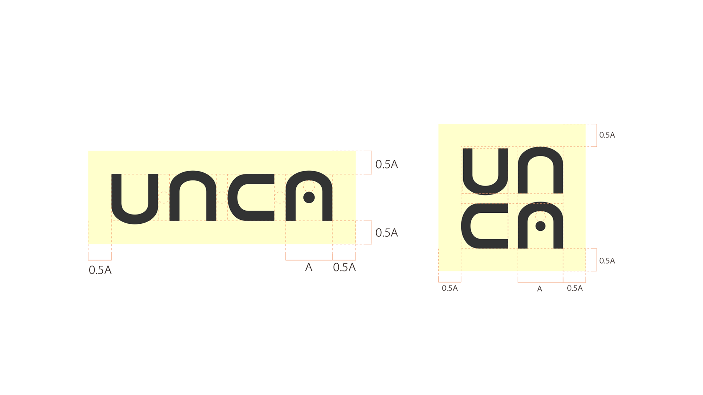

unca
これはぼくのVisionそのもの。
どんなデザイナーで在り続けたいか、どんなモチベーションでいたいか。そんなことを考えながら、将来のデザイン事務所のCI / VIを制作しました。

"unique casts"
デザイナーは、一人ひとりが "役者" であり "プレイヤー" であるとぼくは考えています。
クライアントに寄り添い、創り上げていく"役者"としてのデザイナー。
プロジェクトを純粋に楽しむ"プレイヤー"としてのデザイナー。
そして個性が確立したデザイナーが寄り合うことによる、必然・偶然の
自立性と統一性
メンバー各々が個々に活躍できる、ロゴには先入観を与えないようにするため、シンボルを無くしました。字間にもこだわり、ばらけず、統一感をもたせました。
